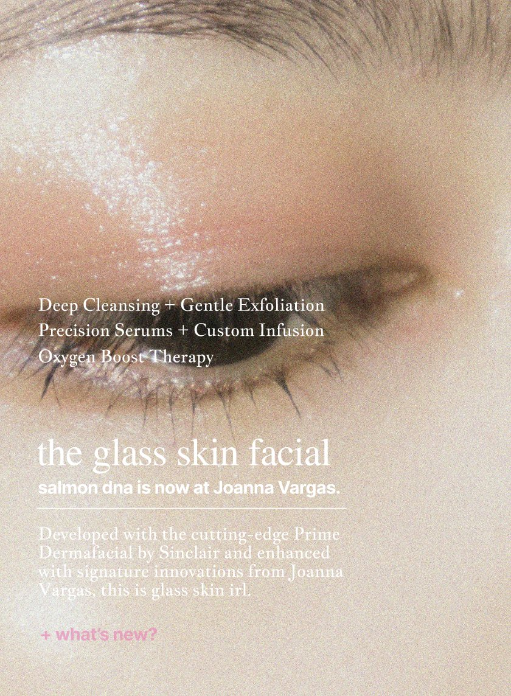
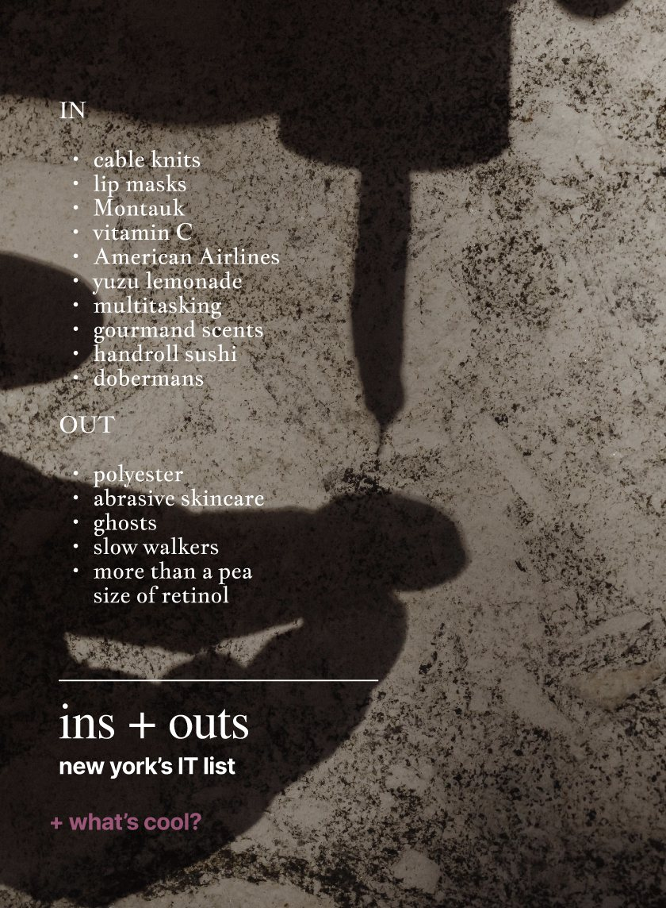
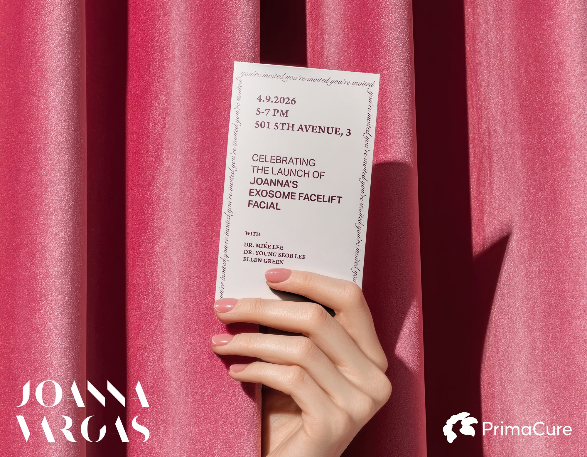

hi, ralph lauren.
della wirfel, I marry data and design. NYC.
why ralph lauren
as an alumni of FIT, I have real-world experience with the fashion business. I interned for a NYFW show with alejandra alonso rojas, which is where I got a real sense of how a designer’s vision can be communicated through product.
if I could have any office I wanted, it would be the purple label office in the men’s flagship mansion on the upper east side.
what luxury means to me
extreme attention to detail. quality of experience over quantity of cool effects.
luxury means extreme attention to detail, and minimal additional elements that would only cheapen the visuals. sticking to branding, and prioritizing quality of experience over quantity of cool effects.
joanna vargas
joanna vargas taught me to balance beautiful, luxury embellishments like a script typeface with very readable, client-first calls to action. a luxury product that looks pretty but isn’t navigable or readable is no good.
for spa girl digest, I was trying to enter the mindset of a 90’s top spa, with iconic colors and visuals. during my time as content strategist, we reached 1.26M monthly views.




private party invitation for the launch of joanna’s exosome facelift facial. see the joanna vargas work →
remi, an interface
I wanted a clickable version because you don’t know how the user flow will go until you’ve experienced it yourself. the flow wasn’t as smooth as it looked in the flats, so I reworked parts of the prototype until it led smoothly from A to B. try remi →


the look
for the look I went after beauty brands like rhode instead of the usual utility apps, so big photos, lots of space, and your library sorted by season like winter 2024. your photos never leave your phone, and I signed the permission screen myself.
trained at FIT
years of brutal art critiques taught me how to take advice, trust me. have a german professor and you will learn how to grow (we loved her).
work to start with


education
CUNY graduate center, expected jan 2027
fashion institute of technology
more
thank you for your time. I hope to hear from you soon.
della